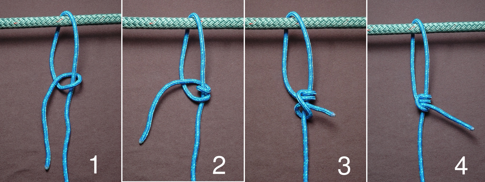
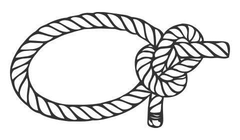
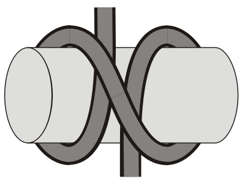
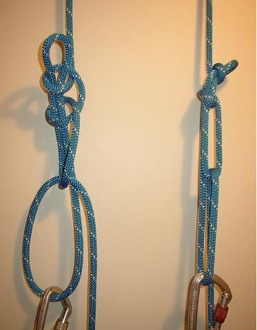

Tarp planning and shelter-knot references
A knot does not turn a tarp into a storm shelter. The fabric, anchors, poles, cord and forecast all belong to one system.
Choose the shelter before the knot
The step-by-step lesson is being rebuilt. The previous instructions and unverified demonstration images have been withdrawn. These limited reference notes are not a substitute for an equipment-specific demonstration.
Use the tarp maker’s supported configurations, attachment points and limits. Check permission to use trees or other anchors; do not improvise with damaged branches, sharp edges or unknown supports. Keep lines out of doors and walking routes.
No demonstrated wind rating is claimed here. If the setup cannot be controlled safely or conditions exceed the equipment’s instructions, leave it packed and use suitable shelter. A tarp is not lightning protection; see the weather and exit decisions.
Give each connection one job
The former four knot articles are consolidated here as references, not as interchangeable steps in an untested rig. Use the tensioners supplied with your shelter when appropriate; adding more leverage can overload an attachment.
- Fixed loop: a bowline is one option for a non-life-safety loop. The retained drawing shows an outside-tail variant; it is not a step sequence for the standard inside-tail version.
- Adjustable guyline: the taut-line sequence below illustrates a friction hitch. Its grip depends on cord and conditions; it is not a rated load system.
- Temporary attachment: a clove hitch can loosen with shifting or slack loads. It is not presented as the default overnight attachment.
- Ridgeline tension: a trucker’s hitch needs a consistent midline-loop and lock-off method. The old article mixed variants, so that recipe has been withdrawn pending a matched demonstration.
None of these references is for climbing, rescue, towing, vehicle recovery or cargo restraint.
Retained knot artwork and credits



